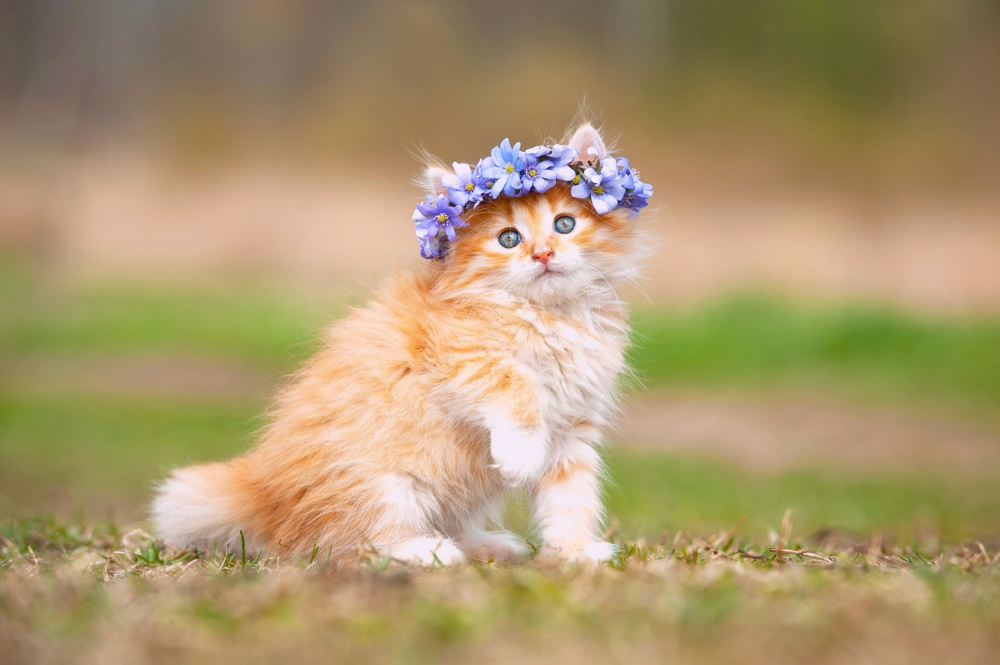

Это заголовок H1, он самый главный и один такой
Основы HTML и CSS — вот что мы изучали на первом уроке от финтеха Тинькофф. И теперь я умею делать разные крутые штуки, например вот этот параграф.
Вот это уже второй параграф и в нём я покажу, что можно делать форматирование текста в HTML без использования CSS. А именно выделять текст жирным шрифтом, курсивом тоже можно, или подчеркиванием. Даже формулы писать можно, потому что текст может бытьподстрочный или надстрочный. Есть ещё куча разных способов форматирования текста в HTML, но делать я это не буду, потому что не по ТЗ.
Я не знаю, нужно ли в каждом параграфе выделять текст жирным, курсивом или подчеркиванием, но сделаю так на всякий случай. И вот я заканчиваю третий параграф, потому что 3 подходит под определние "нескольких параграфов", вы поняли что я это умею, а много читать никто не любит.
Вот это заголовок второго уровня
А пояснение к нему - заголовок третьего уровня
Вчера я сделала салат, и вот его ингредиенты:
- 1/2 качана капусты
- 1 большая морковка
- 1 маленькая свекла
- 1 яблоко
- пакетик гречки
- 2 зубчика чеснока
- 1 болгарский перец
- 1 перчик чилли
- 1 ст.л. яблочного уксуса
- зелень и соль по вкусу
- льняное масло
А порядок приготовления супер простой:
- поставить варить гречку
- нашинковать капусту
- морковку и свеклу натереть на тёрке
- мелко порезать яблоко, болгарский перец, перчик чилли и чеснок
- посолить и накрошить зеленушки туда
- засыпать сваренную остывшую гречку
- залить уксусом и маслом
Мама потом по телефону сказала, что надо было ещё пожамкать капусту с мокровкой руками чтоб они сок дали, но это извращение какое-то по-моему. А так салат на удивление очень вкусный и сытный, несмотря на всю мою нелюбовь к сырой морковке и свекле. А ещё говорят кишечкник чистит хорошо. Собственно поэтому и называется "щётка".
Заголовков не первого уровня может быть сколько угодно
Поэтому вот ещё раз второй и третий заголовки
| Номер | Гора | Высота | Расположение |
|---|---|---|---|
| 1 | Джомолунгма | 8848 | Гималаи |
| 2 | Чогори | 8611 | Каракорум |
| 3 | Канченджанга | 8586 | Гималаи |
| 4 | Лхоцзе | 8516 | Гималаи |
| 5 | Макалу | 8485 | Гималаи |
Настало время отдохнуть, поэтому давайте посмотрим на милых животных
Если котики и собачки ваши не самые любимые животные, то на других вы можете посмотреть здесь.
Цитата в конце:
Работа не волк. Работа - это ворк. Волк - это ходить